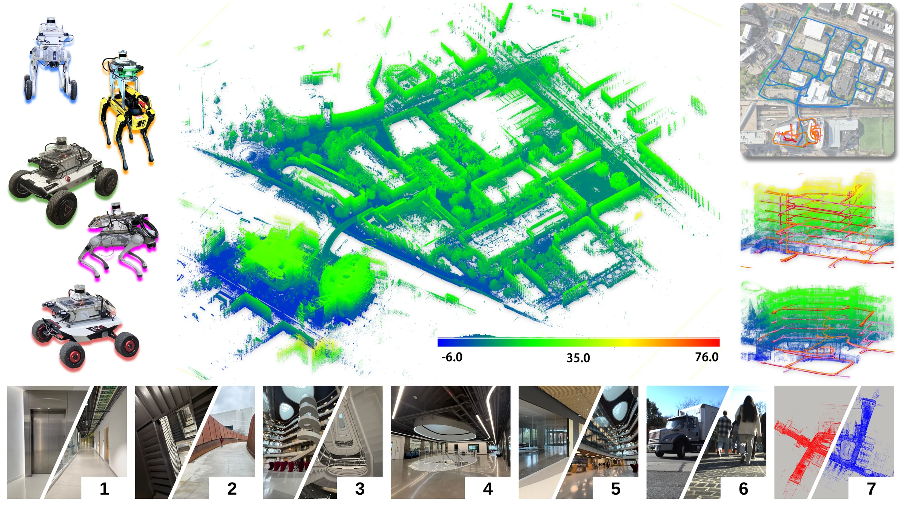
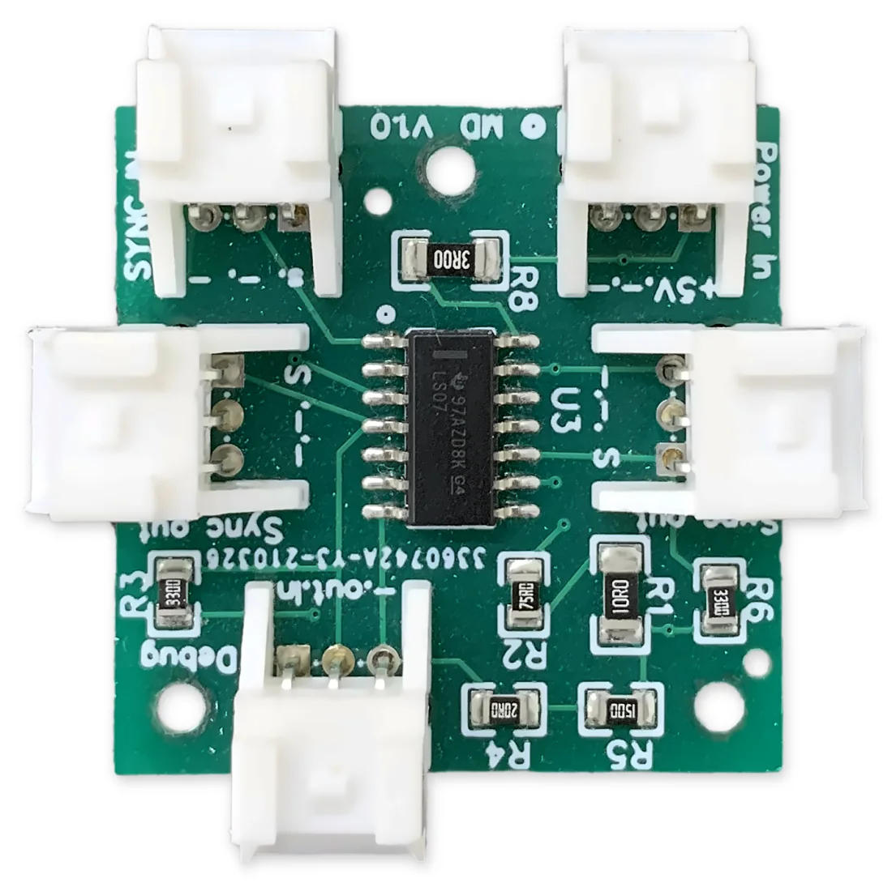

Project page
NeuROAM
Five heterogeneous robots, one GNSS-disciplined clock, campus-scale ground truth, and the radio links they actually had.

Platforms
Same payload on five robots. Paper numbering: P0 Spot through P4 Go2.
| Payload | Robot | LiDAR | Sequences | Duration | Distance |
|---|
Simultaneous playback
All five payloads on one UTC clock. Scrub the day; trails, place, height, and radio links update together.
Link states: direct · mesh route · no link · unknown. Trace at 5 s resolution from the released radio logs.
Recording of the same day (optional):
Time synchronization
Every sensor on every robot shares one GNSS-disciplined clock.
Hover or scrub playback to see how many robots are in ISEC and EXP.
- ZED-F9T feeds PPS and NMEA to the Ouster, which stamps in hardware.
- PPS to the camera sync board triggers both cameras together.
- Host time stamps the images. Receive time − header stamp stays within ~1 ms of GNSS.
- Ouster IMU lag 0.6–0.9 ms; images ~35 ms; clouds 112–127 ms (stamp is the start of the 100 ms sweep).

Payload
One enclosure on every robot. Orbit, explode the stack, or clip through the shell.


Stereo cameras, Ouster LiDAR, VectorNav IMU, ZED-F9T GNSS, Doodle Labs radio, Jetson Orin Nano.
Scenes
Where C-SLAM is hard: basements, glass, crowds, elevators, stairs.
Benchmark
Nine systems on 22 sequences. No method is both complete and accurate on NeuROAM.
| Input | Method | Full | Partial | Fail | ATE [m] | RPEt [m] | RPEr [°] |
|---|
Per-sequence ATE
Data release
Bags, extracted sensors, shared-frame ground truth, and calibration. Download on Hugging Face.
payloadN/
bags/ merged or segment MCAPs
payloadN_sequences.json name, bag, start_ns / end_ns
extracted/
cam0/, cam1/ stereo PNG @ header.stamp
point_cloud/ Ouster sweeps (.npz)
imu/, gps/ CSV
ground_truth/ *_gt.tum in one campus map frame
calibration/
kalibr/ cam–IMU
refined/ LiDAR–cam (not yet for P1 Scout)
Folders use paper numbers. Recorder numbering differs for two robots: Scout is recorder payload3; Go2-W is recorder payload1.
Host clocks agree to a few milliseconds. Direct radio link to another node: 28–71% of monitored time.